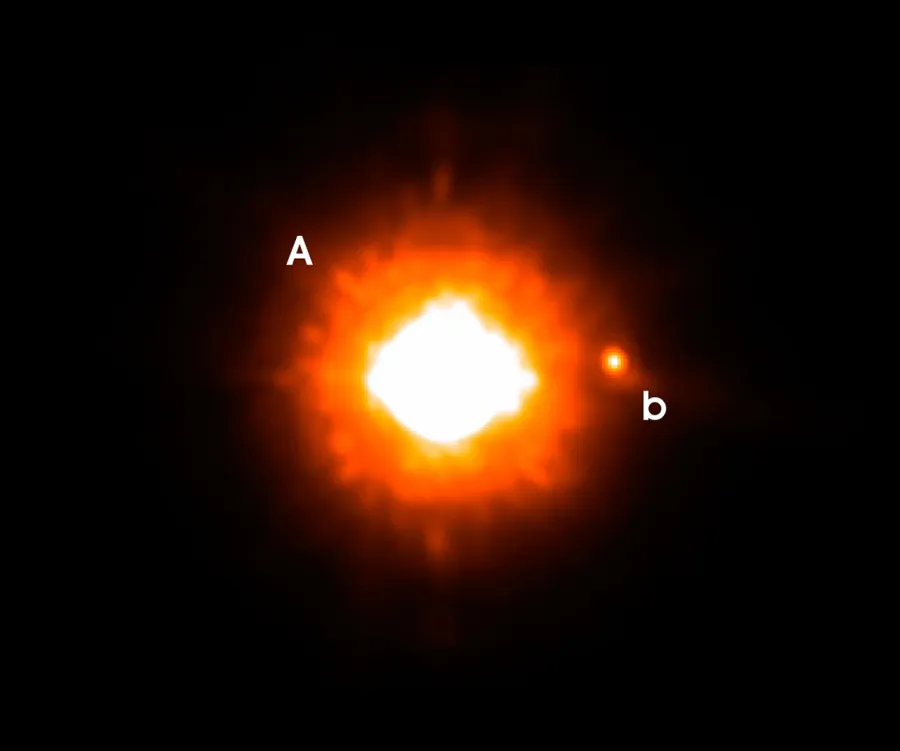

April 7, 2005
Companion of GQ Lupi imaged – planet or brown dwarf?
Using the NACO instrument on ESO's Very Large Telescope (VLT), astronomers found a faint companion next to the young star GQ Lupi. In the infrared image it appears as a small dot to the right of the star, about 250 times fainter than the star and roughly 100 astronomical units away from it.
Older images from Subaru and Hubble showed that the two objects move together. The mass could only be estimated from models: in 2005 ESO quoted a range of 3 to 42 Jupiter masses – so the companion could be either a planet or a brown dwarf.
Sources: ESO: "Is this a Brown Dwarf or an Exoplanet? New Young Sub-stellar Companion Imaged with the VLT" (eso0511)., 2005-04-07; ESO: "The Sub-stellar companion to GQ Lupi" (image eso0511a)., 2005-04-07